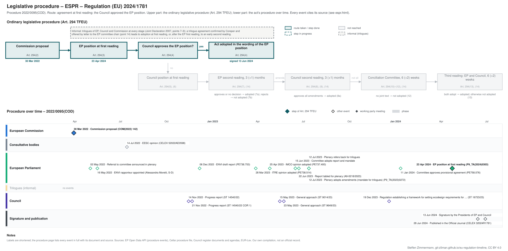

← Regulation timeline › Ecodesign for Sustainable Products Regulation › Legislative procedure · All procedures
Ecodesign for Sustainable Products Regulation – Regulation (EU) 2024/1781
Procedure 2022/0095(COD), completed. Drawing: SVG · PNG · PDF (A3) · draw.io · Page as Markdown: espr.md


| Stage | Completed, published 28 Jun 2024 |
|---|---|
| Route (Art. 294 TFEU) | Agreement at first reading: the Council approved the EP position |
| Latest activity | 28 Jun 2024 · Signature and publication: Published in the Official Journal (CELEX 32024R1781) |

European Parliament committees
| Committee | Role | Rapporteur | Shadow rapporteurs |
|---|---|---|---|
| ENVI Environment, Climate and Food Safety | Responsible | Alessandra Moretti (S&D), appointed 16 May 2022 | Silvia Sardone (ID), Jessica Polfjärd (EPP), Alexandr Vondra (ECR), Jan Huitema (Renew), Sara Matthieu (Greens/EFA), Malin Björk (The Left) |
| IMCO Internal Market and Consumer Protection | Role not given | David Cormand (Greens/EFA), appointed 31 Aug 2022 | – |
| ITRE Industry, Research and Energy | Role not given | Maria Spyraki (EPP), appointed 5 May 2022 | – |
Source: EP Open Data API (participations) and the Legislative Observatory (joint committee, opinions declined); names link to each Member's page on the EP website. The API names no committee for shadow rapporteurs; they are assigned by the EP's order of participants, which groups each committee.
Events
| Date | Actor | Event | Document | Source |
|---|---|---|---|---|
| 30 Mar 2022 | European Commission | Commission proposal (Art. 294(2) TFEU) | COM(2022) 142 | Cellar procedure file 2022/95 (CELEX 52022PC0142) |
| 2 May 2022 | European Parliament | Referral to committee announced in plenary | EP procedure file | EP Open Data API, procedure 2022-0095 (referral) |
| 16 May 2022 | European Parliament | ENVI rapporteur appointed (Alessandra Moretti, S-D) | EP procedure file | EP Open Data API, procedure 2022-0095 (participation RAPPORTEUR) |
| 14 Jul 2022 | Consultative bodies | EESC opinion | CELEX 52022AE0598 | Cellar procedure file 2022/95 |
| 14 Nov 2022 | Council | Progress report | ST 14540/22 | Cellar procedure file 2022/95 (Council register) |
| 21 Nov 2022 | Council | Progress report | ST 14540/22 COR 1 | Cellar procedure file 2022/95 (Council register) |
| 6 Dec 2022 | European Parliament | ENVI draft report | PE738.753 | EP Open Data API, procedure 2022-0095 (committee tabling report) |
| 28 Mar 2023 | European Parliament | ITRE opinion adopted | PE738.514 | EP Open Data API, procedure 2022-0095 (committee adopting opinion) |
| 25 Apr 2023 | European Parliament | IMCO opinion adopted | PE737.400 | EP Open Data API, procedure 2022-0095 (committee adopting opinion) |
| 15 May 2023 | Council | General approach | ST 9014/23 | Cellar procedure file 2022/95 (Council register) |
| 23 May 2023 | Council | General approach | ST 9649/23 | Cellar procedure file 2022/95 (Council register) |
| 15 Jun 2023 | European Parliament | Committee adopts report and mandate | EP procedure file | EP Open Data API, procedure 2022-0095 (committee adopting report) |
| 22 Jun 2023 | European Parliament | Report tabled for plenary | A9-0218/2023 | EP Open Data API, procedure 2022-0095 (tabling plenary) |
| 12 Jul 2023 | European Parliament | Plenary refers back for trilogues | EP procedure file | EP Open Data API, procedure 2022-0095 (plenary refer committee interinstitutional negotiations) |
| 12 Jul 2023 | European Parliament | Plenary adopts amendments (mandate for trilogues) | P9_TA(2023)0272 | EP Open Data API, procedure 2022-0095 (plenary amend) |
| 19 Dec 2023 | Council | Regulation establishing a framework for setting ecodesign requirements for sustainable … | ST 16723/23 | Cellar procedure file 2022/95 (Council register) |
| 11 Jan 2024 | European Parliament | Committee approves provisional agreement | PE758.076 | EP Open Data API, procedure 2022-0095 (committee approve provisional agreement) |
| 23 Apr 2024 | European Parliament | EP position at first reading (Art. 294(3) TFEU) | P9_TA(2024)0303 | EP Open Data API, procedure 2022-0095 (plenary amend proposal) |
| 13 Jun 2024 | Signature and publication | Signature by the Presidents of EP and Council | EP procedure file | EP Open Data API, procedure 2022-0095 (signature) |
| 28 Jun 2024 | Signature and publication | Published in the Official Journal | CELEX 32024R1781 · en.md de.md | EP Open Data API, procedure 2022-0095 (publication official journal) |
Documents
Every document the Council register, the EU database of the Parliament of Austria or the EP lists for the procedure, with its state: public documents link to the official file; documents that are not public link to their entry in the Austrian database where there is one (metadata only). Status: public; not public; not public, leak available (an unofficial copy is known to circulate outside the institutions; it is neither published nor quoted here). Released: when a document listed as not public was released, by the date of the Council's public PDF (a technical date) or else the day our daily check found it public.
| Date | Document | Kind | Subject | Status | Released | Text |
|---|---|---|---|---|---|---|
| 4 Apr 2022 | ST 7854/22 | Council: transmission note | Proposal for a Regulation of the European Parliament and of the Council establishing a framework for setting ecodesign requirements for sustainable products … | public status unknown | – | – |
| 4 Apr 2022 | ST 7854/22 ADD 1 | Council: transmission note | Annexes to the Commission proposal for a Regulation of the European Parliament and of the Council establishing a framework for setting ecodesign requirements … | public status unknown | – | – |
| 4 Apr 2022 | ST 7854/22 ADD 2 | Council: transmission note | Regulatory scrutiny board opinion Sustainable Products Initiative | public status unknown | – | – |
| 4 Apr 2022 | ST 7854/22 ADD 3 | Council: transmission note | Commission staff working document Subsidiarity Grid Accompanying the document Proposal for a Regulation of the European Parliament and of the Council … | public status unknown | – | – |
| 4 Apr 2022 | ST 7854/22 ADD 4 | Council: transmission note | Commission staff working document impact assessment Accompanying the document Proposal for a Regulation of the European Parliament and of the Council … | public status unknown | – | – |
| 4 Apr 2022 | ST 7854/22 ADD 5 | Council: transmission note | Commission staff working document impact assessment Accompanying the document Proposal for a Regulation of the European Parliament and of the Council … | public status unknown | – | – |
| 4 Apr 2022 | ST 7854/22 ADD 6 | Council: transmission note | Commission staff working document impact assessment Accompanying the document Proposal for a Regulation of the European Parliament and of the Council … | public status unknown | – | – |
| 4 Apr 2022 | ST 7854/22 ADD 7 | Council: transmission note | Commission staff working document impact assessment Accompanying the document Proposal for a Regulation of the European Parliament and of the Council … | public status unknown | – | – |
| 4 Apr 2022 | ST 7854/22 ADD 8 | Council: transmission note | Commission staff working document executive summary of the impact assessment Accompanying the document Proposal for a Regulation of the European Parliament and … | public status unknown | – | – |
| 4 May 2022 | ST 7854/22 REV 1 | Council: transmission note | public status unknown | – | – | |
| 14 Jul 2022 | CELEX 52022AE0598 | Opinion | Opinion of the European Economic and Social Committee on the communication from the Commission to the European Parliament, the Council, the European Economic … | public | – | – |
| 19 Jul 2022 | ST 11495/22 | Council: transmission note | Opinion of the European Economic and Social Committee on the Proposal for a Regulation of the European Parliament and of the Council establishing a framework … | public status unknown | – | – |
| 9 Sep 2022 | ST 12197/22 | Council note | Regulation establishing a framework for setting ecodesign requirements for sustainable products and repealing Directive 2009/125/EC - Policy debate | public status unknown | – | – |
| 4 Oct 2022 | ST 13137/22 | Council note | List of working papers (WK) distributed to the Working Party on Competitiveness and Growth (Internal Market-Ecodesign) in the third quarter of 2022 | public status unknown | – | – |
| 4 Oct 2022 | ST 13139/22 | Council note | List of working papers (WK) distributed to the Working Party on Competitiveness and Growth (Internal Market-Attachés) in the third quarter of 2022 | public status unknown | – | – |
| 4 Oct 2022 | ST 13140/22 | Council note | List of working papers (WK) distributed to the Working Party on Competitiveness and Growth (Internal Market) in the third quarter of 2022 | public status unknown | – | – |
| 7 Oct 2022 | ST 13120/22 | Council note | Policy debate | public status unknown | – | – |
| 9 Nov 2022 | PE738.514 | EP draft opinion | DRAFT OPINION on the proposal for a regulation of the European Parliament and of the Council on Establishing a framework for setting ecodesign requirements for … | public | – | – |
| 10 Nov 2022 | PE737.400 | EP draft opinion | DRAFT OPINION on establishing a framework for setting ecodesign requirements for sustainable products and repealing Directive 2009/125/EC | public | – | – |
| 14 Nov 2022 | ST 14540/22 | Council: progress report | Progress report | public | – | – |
| 21 Nov 2022 | ST 14540/22 COR 1 | Council: progress report | Progress report | public | – | – |
| 23 Nov 2022 | ST 14540/22 REV 1 | Council text | not public* | – | – | |
| 6 Dec 2022 | PE738.753 | EP draft report (rapporteur) | DRAFT REPORT on the proposal for a regulation of the European Parliament and of the Council establishing a framework for setting eco-design requirements for … | public | – | – |
| 22 Dec 2022 | ST 16347/22 | Council note | List of working papers (WK) distributed to the Working Party on Competitiveness and Growth (Internal Market-Attachés) in the fourth quarter of 2022 | public status unknown | – | – |
| 22 Dec 2022 | ST 16348/22 | Council note | List of working papers (WK) distributed to the Working Party on Competitiveness and Growth (Internal Market) in the fourth quarter of 2022 | public status unknown | – | – |
| 22 Dec 2022 | ST 16349/22 | Council note | List of working papers (WK) distributed to the Working Party on Competitiveness and Growth (Internal Market-Ecodesign) in the fourth quarter of 2022 | public status unknown | – | – |
| 17 Mar 2023 | ST 7289/23 | Council note | Guidance for further work | public status unknown | – | – |
| 31 Mar 2023 | PE738.514 | EP opinion | Opinion on the proposal for a regulation of the European Parliament and of the Council on Establishing a framework for setting ecodesign requirements for … | public | – | – |
| 27 Apr 2023 | PE737.400 | EP opinion | Opinion on the proposal for a Regulation of the European Parliament and of the Council establishing a framework for setting ecodesign requirements for … | public | – | – |
| 15 May 2023 | ST 9014/23 | Council position (mandate) | General approach | public | – | – |
| 15 May 2023 | ST 9014/23 ADD 1 | Council note | Statement | public status unknown | – | – |
| 15 May 2023 | ST 9014/23 ADD 1 REV 1 | Council note | Statement | public status unknown | – | – |
| 16 May 2023 | ST 9470/23 | Council note | List of working papers (WK) distributed in the Working Party on Competitiveness and Growth (Internal Market-Attachés) in the first quarter of 2023 | public status unknown | – | – |
| 16 May 2023 | ST 9475/23 | Council note | List of working papers (WK) distributed in the Working Party on Competitiveness and Growth (Internal Market) in the first quarter of 2023 | public status unknown | – | – |
| 16 May 2023 | ST 9477/23 | Council note | List of working papers (WK) distributed in the Working Party on Competitiveness and Growth (Internal Market - Ecodesign) in the first quarter of 2023 | public status unknown | – | – |
| 22 May 2023 | ST 9014/23 ADD 2 | Council note | Statement | public status unknown | – | – |
| 23 May 2023 | ST 9649/23 | Council position (mandate) | General approach | public | – | – |
| 22 Jun 2023 | A9-0218/2023 | EP committee report | Report on the proposal for a regulation of the European Parliament and of the Council establishing a framework for setting eco-design requirements for … | public | – | – |
| 11 Jul 2023 | ST 9648/23 REV 1 | Council note | public status unknown | – | – | |
| 12 Jul 2023 | P9_TA(2023)0272 | EP position | Ecodesign Regulation | public | – | – |
| 17 Jul 2023 | ST 11881/23 | Council note | List of working papers (WK) distributed to the Working Party on Competitiveness and Growth (Internal Market-Attachés) in the second quarter of 2023. | public status unknown | – | – |
| 17 Jul 2023 | ST 11896/23 | Council note | List of working papers (WK) distributed to the Working Party on Competitiveness and Growth (Internal Market) in the second quarter of 2023. | public status unknown | – | – |
| 17 Jul 2023 | ST 11901/23 | Council note | List of working papers (WK) distributed to the Working Party on Competitiveness and Growth (Internal Market - Ecodesign) in the second quarter of 2023. | public status unknown | – | – |
| 19 Dec 2023 | ST 16723/23 | Provisional agreement | Regulation establishing a framework for setting ecodesign requirements for sustainable products and repealing Directive 2009/125/EC - Analysis of the final … | public | – | – |
| 22 Dec 2023 | PE758.076 | Provisional agreement | Provisional agreement resulting from interinstitutional negotiations Proposal for a regulation of the European Parliament and of the Council establishing a … | public | – | – |
| 9 Jan 2024 | ST 5147/24 | Council note | Regulation establishing a framework for setting ecodesign requirements for sustainable products and repealing Directive 2009/125/EC - Letter to the Chair of … | public status unknown | – | – |
| 23 Feb 2024 | PE 106/23 | Council note | Regulation of the European Parliament and of the Council establishing a framework for the setting of ecodesign requirements for sustainable products, amending … | public status unknown | – | – |
| 18 Mar 2024 | ST 7925/24 | Council note | List of working papers (WK) distributed to the Working Party on Competitiveness and Growth (Internal Market - Ecodesign) in the third quarter of 2023. | public status unknown | – | – |
| 18 Mar 2024 | ST 7954/24 | Council note | List of working papers (WK) distributed to the Working Party on Competitiveness and Growth (Internal Market - Ecodesign) in the fourth quarter of 2023. | public status unknown | – | – |
| 23 Apr 2024 | P9_TA(2024)0303 | EP position | Ecodesign Regulation | public | – | – |
| 29 Apr 2024 | ST 9221/24 | Council note | Outcome of the European Parliament's first reading (Strasbourg, 22 to 25 April 2024) | public status unknown | – | – |
| 21 May 2024 | ST 9266/24 | Council note | Draft Regulation of the European Parliament and of the Council establishing a framework for the setting of ecodesign requirements for sustainable products, … | public status unknown | – | – |
| 21 May 2024 | ST 9266/24 ADD 1 | Council note | Draft Regulation of the European Parliament and of the Council establishing a framework for the setting of ecodesign requirements for sustainable products, … | public status unknown | – | – |
| 24 May 2024 | ST 9266/24 COR 1 | Council note | public status unknown | – | – | |
| 28 May 2024 | ST 10389/24 | Council note | Voting result Regulation of the European Parliament and of the Council establishing a framework for the setting of ecodesign requirements for sustainable … | public status unknown | – | – |
| 14 Jun 2024 | PE 106/23 REV 1 | Council note | Regulation of the European Parliament and of the Council establishing a framework for the setting of ecodesign requirements for sustainable products, amending … | public status unknown | – | – |
* Not public: the registers are checked again daily until the document is released; last check 9 Oct 2026.
Texts as Markdown
Unofficial Markdown conversions for reading, searching and project folders; only the official document is authentic. "Read" opens the rendered text on GitHub, where a link to a provision (#art-13, #rec-12, #annex-i) jumps to it.
| Date | Stage | Document | Markdown | Read |
|---|---|---|---|---|
| 28 Jun 2024 | Official Journal | CELEX 32024R1781 | en de | GitHub |
| 7 Aug 2024 | Corrigendum | CELEX 32024R1781R(01) | en de | GitHub |
| 28 Apr 2025 | Corrigendum | CELEX 32024R1781R(02) | en de | GitHub |
| 27 Nov 2025 | Corrigendum | CELEX 32024R1781R(03) | de | GitHub |
Standardisation
Standardisation requests (Art. 10 of Regulation (EU) No 1025/2012) ask CEN, CENELEC and ETSI to draft harmonised standards in support of the act; standards cited in the Official Journal give a presumption of conformity. Planned requests come from the Commission's annual Union work programmes for European standardisation (Art. 8), which are plans, not decisions. Deadlines as set in the request's annexes (hand-checked).
M/604 – C(2024)5423 (under execution)
COMMISSION IMPLEMENTING DECISION of 31.7.2024 on a standardisation request to the European Committee for Standardisation, the European Committee for Electrotechnical Standardisation, and the European Telecommunications Standards Institute as regards digital product passports in support of Union policy on ecodesign requirements for sustainable products and on batteries and waste batteries
adopted 31 Jul 2024; expires 30 Mar 2028; ESOs: CEN, CENELEC, ETSI. eNorm · decision and annexes · en.md · de.md
M/604 Amd 1 – C(2025)8024 (under execution)
COMMISSION IMPLEMENTING DECISION of 28.11.2025 amending Implementing Decision C(2024)5423 as regards the legal basis and the deadlines for the adoption of the standards
adopted 28 Nov 2025; expires 30 Mar 2028; ESOs: CEN, CENELEC, ETSI; amends M/604. eNorm · decision and annexes · en.md · de.md
Committees and expert groups
Comitology committees of Member State representatives give opinions on draft implementing acts (Regulation (EU) No 182/2011); expert groups advise the Commission on delegated acts, guidance and implementation; groups set up by an act itself (e.g. the NIS Cooperation Group) bring together the Member States, the Commission and agencies. Meetings and documents as published in the Comitology Register, the Register of Commission expert groups and on the Commission's pages of these groups, from 2024 on.
Ecodesign for Sustainable Products Committee
Comitology committee C130300, ENV; advisory procedure (Art. 4 of Regulation (EU) No 182/2011); examination procedure (Art. 5, 6 and 7 of Regulation (EU) No 182/2011). Official source: Comitology Register ↗
Group of experts on Ecodesign for Sustainable Products and Energy Labelling ('the Ecodesign Forum') (Ecodesign Forum)
Expert group E03969, ENER, ENV, GROW. Official source: Register of Commission expert groups ↗
| Date | Meeting | Documents |
|---|---|---|
| 19 Mar 2026 | Ecodesign Forum - Digital Product Passport (DPP) | agenda · agenda · minutes |
| 24 Nov 2025 | Ecodesign Forum | agenda · minutes |
| 1 Apr 2025 | Meeting of the "Group of Experts on Ecodesign for Sustainable Products and Energy Labelling" on Electronic Displays of 1 April 2025 | agenda |
| 19 Feb 2025 | First meeting of the Group of Experts on Ecodesign for Sustainable Products and Energy Labelling (‘the Ecodesign Forum’ - E03969) - Wed. 19/02/2025 and Thurs. 20/02/2025 (hybrid format) | agenda · agenda · minutes · other document · other document · other document · other document |